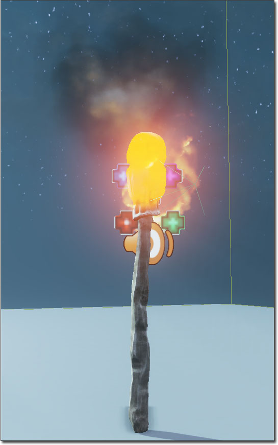
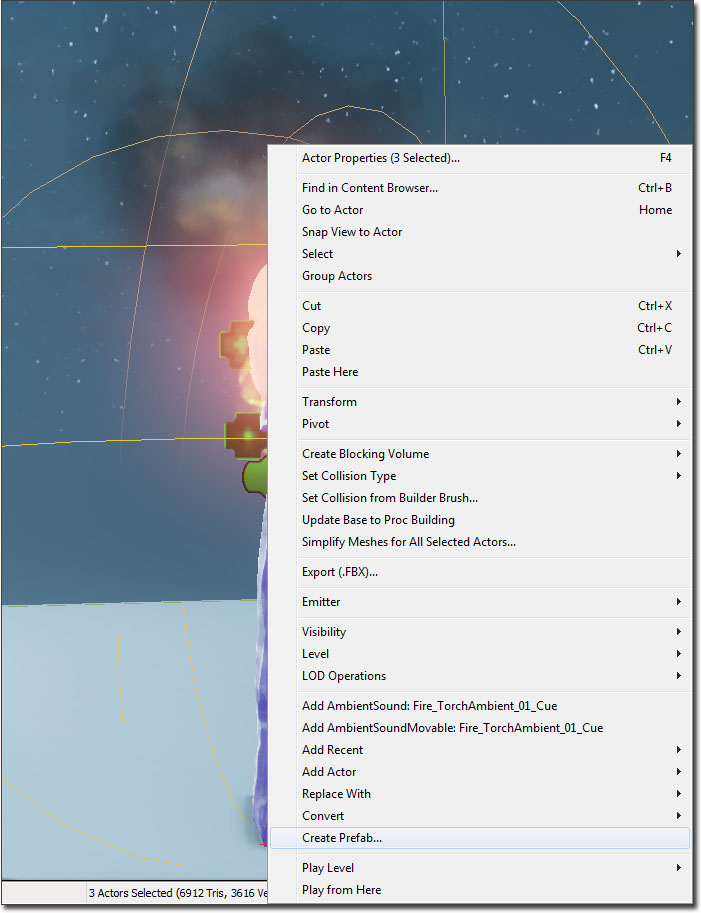
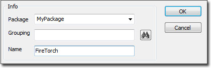
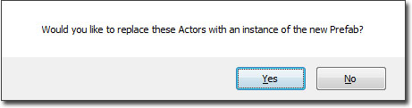
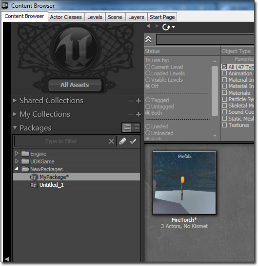
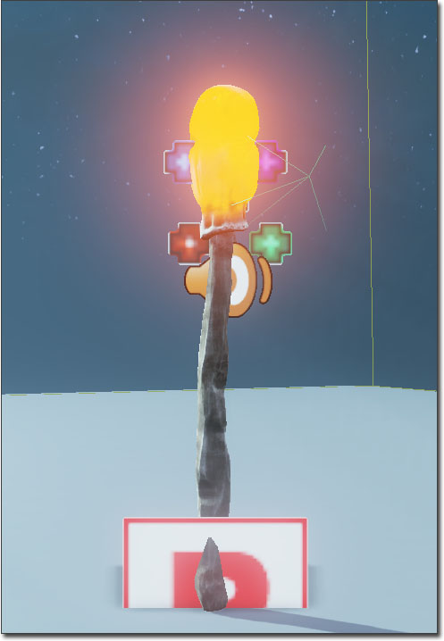
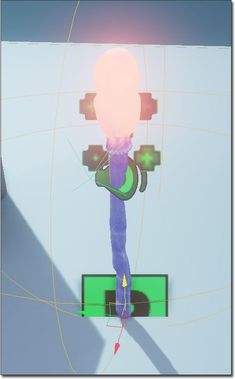
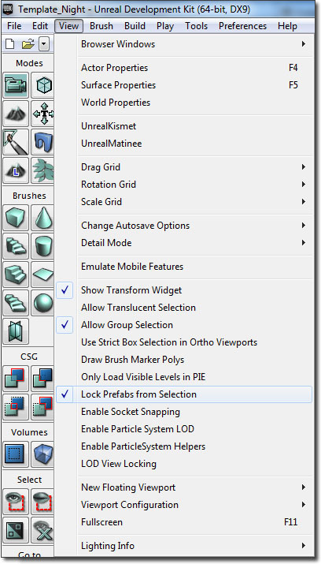
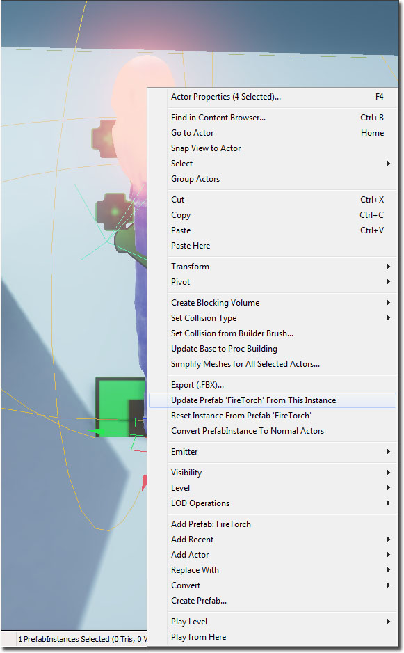
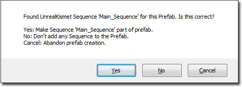

Using Prefabs
Overview
Prefabs are collections of actors and associated Kismet that can be stored in a package and instanced into a level.
Quite often when constructing a level you want to create some arrangement of actors and associated Kismet, and then re-use that collection in the same or other levels. An example might be a flaming torch, which consists of a static mesh, a light, a particle system and some Kismet which allows it to be blown out. Prefabs allows you to create this kind of collection once, and then save it in a package as a Prefab. You can then select the Prefab in the Content Browser, and add it many times through the level.
Prefabs can have changes made to them in a level, and those changes can then be propagated to all existing instances of that Prefab. Because this uses Unreal's property system, only properties still at their original prefab defaults will be updated when the Prefab changes. For example, imagine you have a Prefab that contains a yellow light, and you then change one instance of the Prefab to have a blue light. Then you change the Prefab itself to have a green light. Only instances who's light is still yellow will have the color changed to green. This is very useful, as it allows you modify, or even remove, parts of a Prefab instance to make it fit a particular usage, but also receive updates to the Prefab.
Suggested Workflow
While the functionality listed in this document is still accurate from a technical standpoint, Epic's level designers and artists use the following internal workflow to avoid any issues when using prefabs:
- Use Prefabs as a level placement device only.
- This means that once a prefab is placed in a level, it should be immediately converted back to straightforward actors by right-clicking and choosing Convert PrefabInstance To Normal Actors.
- Avoid certain advanced features, including propagating actor property changes to prefab instances already placed in the level, and storing Kismet logic within the prefab asset.
While these features do technically work, it is possible that their use my lead to various issues. As such, Epic's internal staff now only uses prefabs as described above and strongly recommends this workflow.
Creating a Prefab
To create a new Prefab, first assemble the actors as you wish in the level.

Then select them all, right-click and choose Create Prefab from the context menu.

You will be prompted for a Package Name, optional Group Name and a name for the new Prefab.

It will then ask you if you want to replace the selected Actors with an instance of the new Prefab. The origin that is selected for the new Prefab is the origin of the largest Actor that was selected.

You should now be able to see the new Prefab in the Content Browser. Prefabs display a thumbnail showing the the Prefab in the level when you created it. This is taken from the position of the camera in the perspective editor view port when the Prefab was created, so its worth getting a good view on your objects before you create the Prefab.

Placing a Prefab Instance
To place an instance of a Prefab, simply select it in the Content Browser, right-click in the level and choose Add Prefab: . It should appear in the level. You will also see that all instances of a Prefab have a PrefabInstance Actor associated with them. This looks like a red P icon, and represents the origin of the Prefab.

This is used for keeping track of the Prefab that was used for this instance, and which Actors are part of it.
When you create a Prefab, references between Actors within the Prefab are correctly preserved. So if you have an Actor attached to another Actor in the Prefab, this will be handled correctly each time you place the Prefab. However, any references to Actors outside the Prefab will be cleared.
Editing a Prefab
By default, when you click on any Actor within a Prefab instance it selects the whole instance. This is to make working with prefabs easier, as you can then move them around as one unit.

However, you sometimes want to edit a particular Actor within a Prefab. To do this, you will need to first unlock prefabs from selection. This is done by opening the View menu and unchecking the "Lock Prefabs from Selection". From there you can select the individual actors that belong to that Prefab.

Updating a Prefab
If you wish to update a Prefab stored in the package, right clicking on a modified Prefab Instance and select Update Prefab From This Instance within the context menu. This will then copy the properties from the selected instance to its Prefab. It will then propagate any changes to all instances of that Prefab currently in the level. If you have deleted an Actor from that instance, then that Actor will be removed from the Prefab itself and from all instances of the Prefab. If you wish to add a new Actor to a Prefab, select the Prefab instance and any Actors you wish to add, and do the update step. These Actors will then be added to the Prefab and all instances. The preview image for the Prefab is also re-captured when you update a Prefab.
As noted above, if you change a property on an instance of a Prefab, that value will not be changed when the base Prefab is updated. Also, when you delete an Actor from an instance of a Prefab, that Actor will not re-appear when the Prefab is updated. BSP brushes and Volumes do not work in this way though, and are always copied from the Prefab.
When you open a map which contains instances of a Prefab that has been updated since the map was saved, it will automatically update any instances of that Prefab in the map and show you this dialog:

Reseting a Prefab
If you've made changes to a Prefab that you don't like, you can always revert back to the prefab stored inside the package. First make sure that you have checked Locked Prefabs from Selection, then right click and select Reset Instance From Prefab .
Add a Kismet Sequence to a Prefab
Prefabs can contain Kismet scripting as well as collections of Actors. When you create or update a Prefab, it will search the Level Sequences to see if there are any references to Actors in the Prefab. If it finds any, it will look for the highest sequence in the hierarchy which contains them all, and then ask you if that is the correct Sequence to use for this Prefab:

If you answer Yes, it performs an extra check that there are no references within this Sequence to Actors that are not in the Prefab. If this is the case, it will display a warning and will not include the Sequence in the Prefab.
When you place a Prefab that contains a Kismet sequence into a level, it will instance the Kismet sequence into a top-level sub-sequence called Prefabs. Each instance of a Prefab in a level has its own copy of the associated Kismet sequence. When the Prefab is updated, the Kismet sequence for each instance is completely replaced from the one in the Prefab, so it not possible to customize the Kismet sequence per-instance. However, it is possible to add input, outputs and variable connectors to the Kismet sequences of the Prefab. In this way you can expose functionality to Level Designers. An example of this might be a door prefab whose sequences exposes inputs for locking and opening the door, and an output which is fired each time the door is opened.
Converting a Prefab back to Normal Actors.
Select the Prefab, then right click and select the 'Convert PrefabInstance To Normal Actors' option in the context menu. This will delete the prefab instance and convert all of the prefabs actors into normal actors again.
Prefab Tips
- If you select an Actor that is part of a Prefab instance, you can press Shift-P to select all Actors which are part of that instance. You can also do this by choosing the Select All Actors In Prefab(s) option from the context menu.
- If you select a PrefabInstance, you can choose Open Sequence For PrefabInstance In Kismet, to open Kismet and jump straight to the sub-sequence for that instance.
Important!
You are viewing documentation for the Unreal Development Kit (UDK).
If you are looking for the Unreal Engine 4 documentation, please visit the Unreal Engine 4 Documentation site.